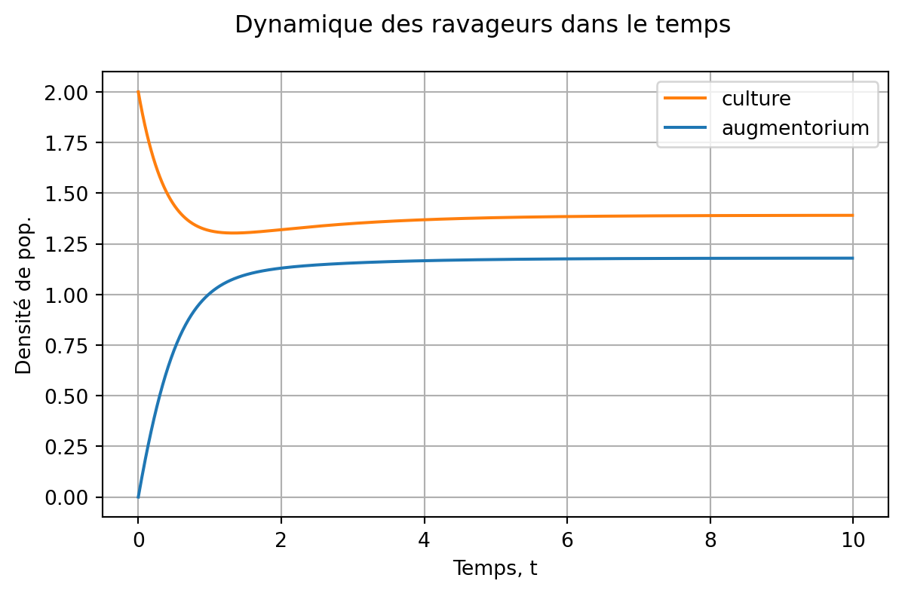
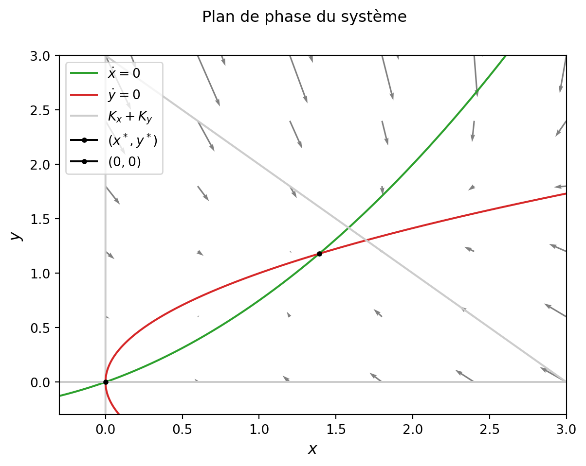
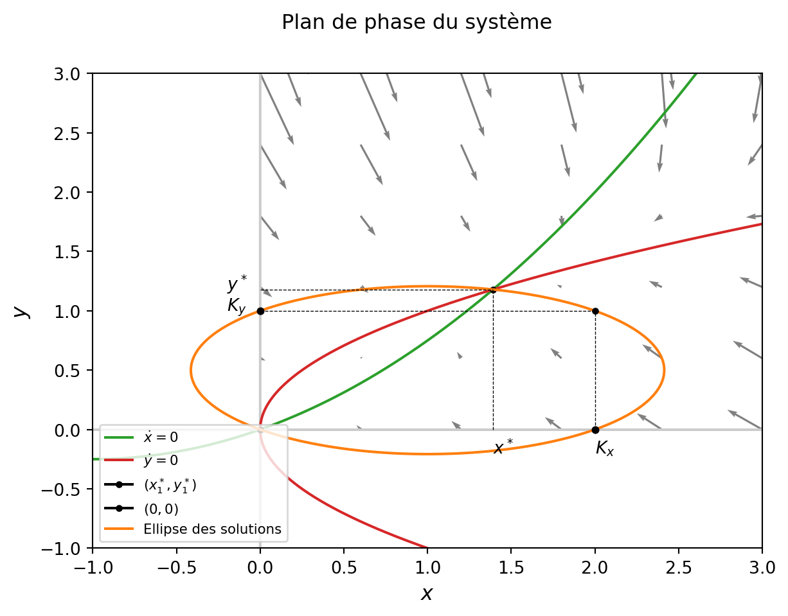
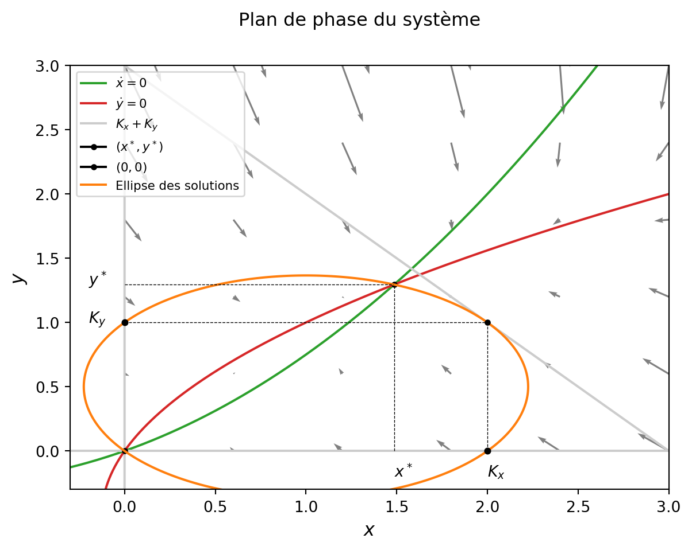
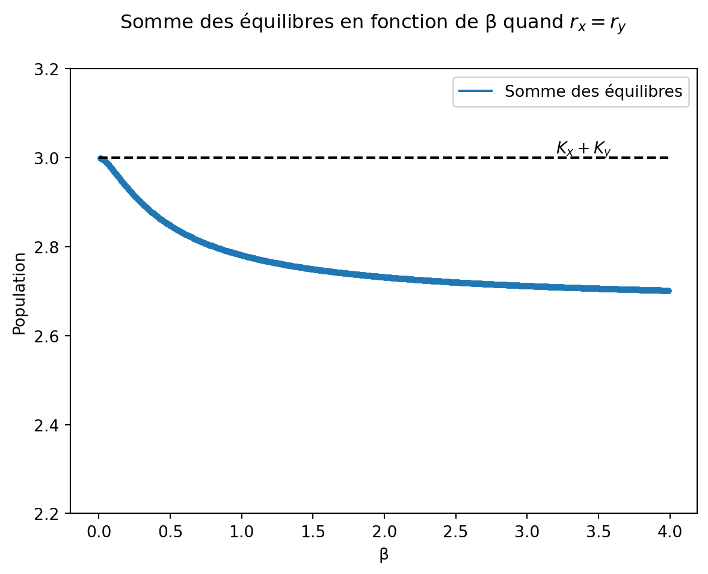
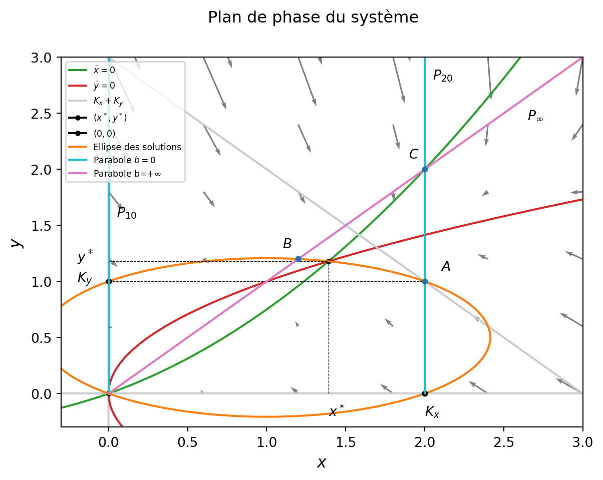
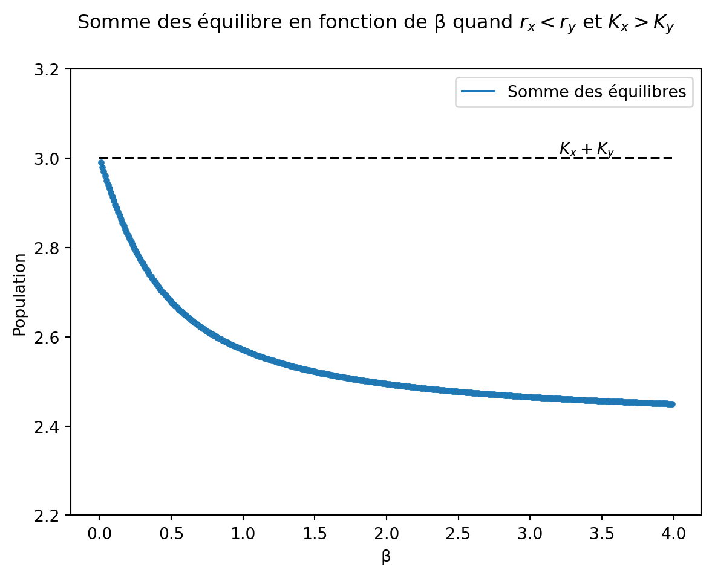
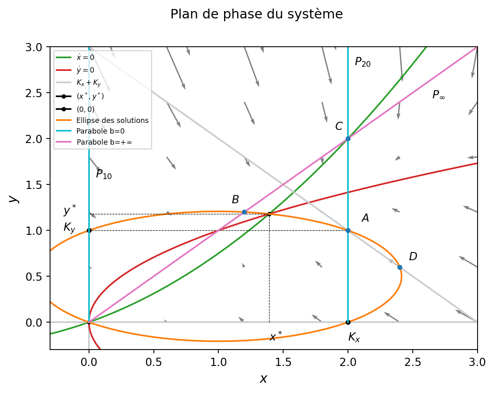
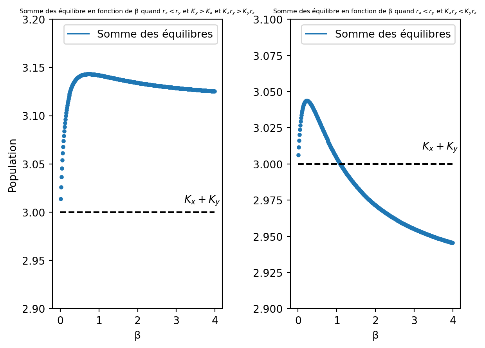
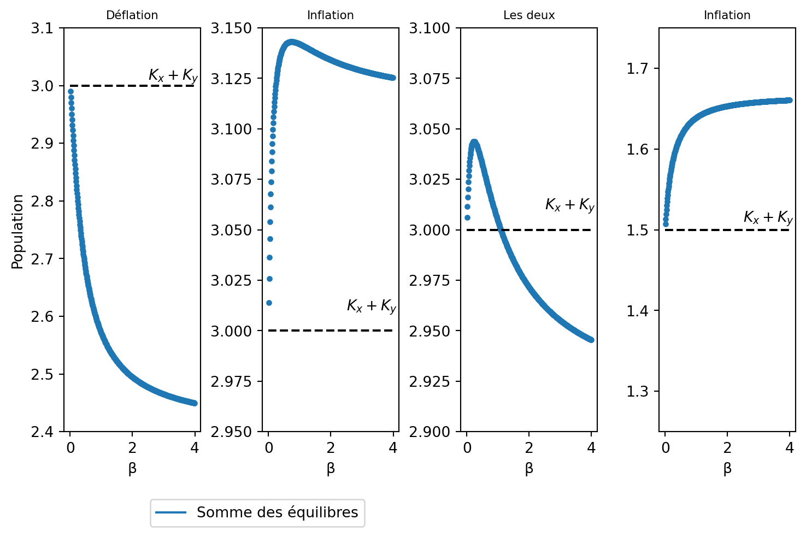

Code
import numpy as np
import matplotlib.pyplot as plt
from scipy.integrate import odeintModules à importer :
import numpy as np
import matplotlib.pyplot as plt
from scipy.integrate import odeintOn pose le modèle suivant d’après Arditi (2015) : \left\{\begin{array}{l} \dot x = r_xx\left(1-\frac{x}{K_x}\right)+\beta(y-x)\\ \dot y = r_yy\left(1-\frac{y}{K_y}\right)+\beta(x-y). \end{array}\right. \tag{1}
avec :
- x la population dans la première structure,
- y la population dans la seconde structure,
- r_x et r_y le taux de croissance dans les deux structures,
- K_x et K_y les capacités de charge des deux structures,
- \beta la force de migration entre les structures.
Ce modèle est un modèle ressemblant peu à notre situation d’augmentorium car celui-ci est caractérisé par une migration assymétrique, il permet néanmoins de situer la démarche et les outils que nous allons utiliser pour étudier des modèles plus complexes.
On va tracer la dynamique de la population en fonction du temps pour se faire une première idée de comment se comporte la population.
On définit le modèle sous Python :
def aug(etat, t, param):
rx, ry, Kx, Ky, b = param
x, y = etat
s = [ rx * x * ( 1 - x/Kx ) + b * ( y - x ),
ry * y * ( 1 - y/Ky ) + b * ( x - y )]
return s On va utiliser odeint de Scipy afin de simuler une solution en fonction du temps. Il faut donc définir un temps d’intégration, des conditions initiales et les paramètres du modèle :
## Temps d'intégration:
ti = np.arange(0, 10, 0.01)
## Etats initiaux:
x0 = 2
y0 = 0
e0 = [x0 ,y0]
## Paramètres:
rx = 0.5
ry = 1
Kx = 2
Ky = 1
b = 1
param_aug = np.array([rx, ry, Kx, Ky, b])
## Simulation:
s = odeint(aug, e0, ti, args = (param_aug, ))Maintenant qu’on a la simulation on peut réprésenter la figure avec matplotlib :
fig, ax = plt.subplots(1, 1, figsize = (7, 4 ))
fig.suptitle('Dynamique des ravageurs dans le temps')
ax.plot(ti, s[:, 0], color = 'C1', label = 'culture')
ax.plot(ti, s[:, 1], color = 'C0', label = 'augmentorium')
ax.grid() #on ajoute la grille
ax.legend() #on ajoute la légende
ax.set_xlabel('Temps, t');
ax.set_ylabel('Densité de pop.');
Cette simulation nous montre une hausse de la population dans l’augmentorium et une baisse de la population dans la culture.
Les deux populations atteignent un équilibre qui semble stable (il se maintient dans le temps).
Dans le cas d’un augmentorium, on voit que le simple fait de débarasser les fruits et de les mettre dans un espace séparé de la culture ammène à une baisse de la population de ravageurs dans la culture.
Nous allons tracer le plan de phase associé à ce système pour voir les équilibres et leurs stabilités.
A l’équilibre on a par définition \dot x = 0 et \dot y =0 ce qui donne :
\left\{\begin{array}{l} 0 = r_xx^*\left(1-\frac{x^*}{K_x}\right)+\beta(y^*-x^*) \Leftrightarrow y^*=r_xx^*\left(\frac{1}{r_x}-\frac{1}{\beta}+\frac{x^*}{\beta K_x}\right)\\ 0 = r_yy^*\left(1-\frac{y^*}{K_y}\right)+\beta(x^*-y^*) \Leftrightarrow x^*=r_yy^*\left(\frac{1}{r_y}-\frac{1}{\beta}+\frac{y^*}{\beta K_y}\right) \end{array}\right. \tag{2}
avec x^* et y^* la valeur des équilibres.
Ainsi, les deux isoclines correspondent à des paraboles. Celles-ci se croisent trivialement en (0,0) et dans le quadrant positif en (x^*,y^*).
Pour calculer (x^*,y^*) on va utiliser l’expression de x^* trouvée en (2) qu’on va rentrer dans l’équation de y^* :
Comme x^* = r_yy^*\left(\frac{1}{r_y}-\frac{1}{\beta}+\frac{y^*}{\beta K_y}\right) on a :
y^* = r_x\left[r_yy^*\left(\frac{1}{r_y}-\frac{1}{\beta}+\frac{y^*}{\beta K_y}\right)\right]\left(\frac{1}{r_x}-\frac{1}{\beta}+\frac{r_yy^*\left(\frac{1}{r_y}-\frac{1}{\beta}+\frac{y^*}{\beta K_y}\right)}{\beta K_x}\right)
\Leftrightarrow
y^* = y^* - \frac{r_yy^*}{\beta} + \frac{r_y{y^*}^2}{\beta K_y} - \frac{r_xy^*}{\beta} + \frac{r_xr_yy^*}{\beta^2} - \frac{r_xr_y{y^*}^2}{\beta^2 K_y} + \\[.2cm]
\frac{r_x{y^*}^2}{\beta K_x} - \frac{r_xr_y{y^*}^2}{\beta^2 K_x} + \frac{r_xr_y{y^*}^3}{\beta^2 K_xK_y} - \frac{r_xr_y{y^*}^2}{\beta^2 K_x} + \\[.2cm]
\frac{r_xr_y^2{y^*}^2}{\beta^3 K_x} - \frac{r_xr_y^2{y^*}^3}{\beta^3 K_x K_y} + \frac{r_xr_y{y^*}^3}{\beta^2 K_xK_y} - \\[.2cm]
\frac{r_xr_y^2{y^*}^3}{\beta^3 K_xK_y} + \frac{r_xr_y^2{y^*}^4}{\beta^3K_xK_y^2}
\Leftrightarrow
y^*\left(- \frac{r_y}{\beta} - \frac{r_x}{\beta} + \frac{r_xr_y}{\beta^2}\right) + \\[.2cm]
{y^*}^2\left(\frac{r_y}{\beta K_y} - \frac{r_xr_y}{\beta^2 K_y} + \frac{r_x}{\beta K_x} - 2\frac{r_xr_y}{\beta^2 K_x} + \frac{r_xr_y^2}{\beta^3 K_x} \right) + \\[.2cm]
2{y^*}^3\left( \frac{r_xr_y}{\beta^2 K_xK_y} - \frac{r_xr_y^2}{\beta^3 K_xK_y} \right) +
{y^*}^4 \frac{r_xr_y^2}{\beta^3K_xK_y^2} = 0
Ce qui donne après réarrangement : y^*\left(\frac{1}{\beta}\left[\frac{r_xr_y}{\beta} - r_y -r_x\right]\right)+ \\[.2cm] {y^*}^2\left(\frac{r_y}{\beta K_y}\left[1-\frac{r_x}{\beta}\right]+\frac{r_x}{\beta K_x}\left[1-2\frac{r_y}{\beta}+\frac{r_xr_y}{\beta^2}\right]\right)+\\[.2cm] 2{y^*}^3\left(\frac{r_xr_y}{\beta^2 K_xK_y}\left[1-\frac{r_y}{\beta}\right]\right) + {y^*}^4 \frac{r_xr_y^2}{\beta^3K_y^2K_x} = 0 \tag{3}
Ce polynôme est résoluble via numpy pour obtenir y^*:
## On défnit un monome y, un polynôme p et on prend ses solutions:
y = np.polynomial.Polynomial([0, 1])
pol = y * (rx * ry * ((1/b) * ((1/b) - (1/rx) - (1/ry)) + 1/(rx * ry)) - 1) + \
(y**2) * ((rx*ry)/b) * ((1/Ky) * ((1/rx) - (1/b)) + (1/Kx) * ((1/ry) - (2/b) + (ry/(b**2)))) + \
2 * (y**3) * ((rx * ry)/((b**2) * Kx * Ky)) * (1 - (ry/b)) + \
(y**4) * ((rx * (ry**2))/((b**3) * (Ky**2) * Kx))
## Solution qu'on obtient avec un masque booléen qui sélectionne les racines réelles et strictement positives:
sol = pol.roots()[ (np.isreal( pol.roots() )) * (pol.roots() > 0)]
yeq=sol[0].realOn déduit x^* via sa définition par le système ( 2:
xeq = (ry * yeq * ((1/ry) - (1/b) + (yeq/(b * Ky)))).realAvec la valeur des équilibres on va maintenant tracer le plan de phase :
fig, ax = plt.subplots(1, 1)
fig.suptitle('Plan de phase du système')
## Isocline nulles:
xt = np.arange(-10, 10, 0.01)
## Pour xdot = 0:
ax.plot(xt,xt * (1/b) * (rx * ((xt/Kx) - 1) + b),
color = 'C2', label = '$\dot x=0$')
ax.plot(np.zeros_like(xt), xt, color = '0.8', markersize = 6)
## Pour ydot = 0:
ax.plot(xt * (1/b) * (ry * ((xt/Ky) - 1) + b), xt,
color = 'C3', label = '$\dot y=0$')
ax.plot(xt, np.zeros_like(xt), color = '0.8', markersize = 6)
## On réduit la vue à ce qui nous intéresse:
ax.set_xlim(left = -.3, right = 3)
ax.set_ylim(top = 3, bottom = -.3)
## On trace la droite la somme des capacités:
x = np.arange(0, 10, 0.01)
ax.plot(x, -x + Kx + Ky, label = '$K_x+K_y$', color = '0.8')
## On nomme les axes:
ax.set_xlabel('$x$', fontsize = '12') ;
ax.set_ylabel('$y$', fontsize = '12') ;
## On plot les deux équilibres:
ax.plot(xeq.real, yeq.real, label = '$(x^*,y^*)$', marker = '.', markersize = 6, color = 'k')
ax.plot(0, 0, label = '$(0,0)$',
marker = '.', markersize = 6, color = 'k')
## Localisation de la légende:
ax.legend(loc = 'upper left')
## Ajout du champ de vecteur via la fonction quiver :
xg = np.arange(0, 5, 0.6)
yg = np.arange(0, 5, 0.6)
X, Y = np.meshgrid(xg, yg)
dx, dy = aug([X, Y], 0, param_aug)
ax.quiver(X, Y, dx, dy, angles = 'xy',
color = 'grey', scale = 80, width = 0.003);
Comme dit plus haut on a bien un croisement dans le quadrant positif qui correspond à l’équilibre (x^*,y^*).
Les paraboles, en fonction des valeurs de leurs racines, peuvent croiser de différentes manières les axes des abssices et des ordonnées.
Le plan de phase peut donc présenter plusieurs profils, autre que celui tracé ici. Néanmoins, le croisement des paraboles dans le quadrant positif (l’équilibre non nul) est toujours présent quelque soit le profil.
En faisant apparaître le champ de vecteur on peut déduire que l’équilibre en (0,0) est instable et l’équilibre en (x^*,y^*) est stable.
Il est clair que (0,0) est instable et (x^*,y^*) est stable (par le champ de vecteur).
Mathématiquement considérons la jacobienne de (1):
\mathbb{J}=\begin{pmatrix}
\ r_x-\frac{2r_xx}{K_x}-\beta & \beta \\
\ \beta & r_y -\frac{2r_yy}{K_y}-\beta
\end{pmatrix}
\tag{4}
et donc pour (0,0):
\mathbb{J_{\vec{0}}}=\begin{pmatrix} \ r_x-\beta & \beta \\ \ \beta & r_y -\beta \end{pmatrix}
Les valeurs propres \lambda _1 et \lambda _2 de cette matrice sont les solutions du polynôme caractéristique définit par : \begin{vmatrix} r_x-\beta-\lambda & \beta \\ \beta & r_y -\beta -\lambda \ \end{vmatrix} = 0 \Leftrightarrow (r_x-\beta-\lambda)(r_y-\beta - \lambda) - \beta^2 = 0 \Leftrightarrow \lambda^2 + \lambda\left(2\beta - r_x - r_y\right) + r_xr_y - \beta(r_x+r_y) = 0
Le discriminant \Lambda est donc définit par :
\Lambda = \left(2\beta - r_x - r_y\right)^2 - 4(r_xr_y - \beta[r_x+r_y]) \\
= 4\beta^2 -4\beta(r_x +r_y) + r_x^2 +r_y^2 +2r_xr_y -4r_xr_y +4\beta(r_x +r_y) \\ = 4\beta^2 + (r_x-r_y)^2
Et donc le spectre \sigma de la jacobienne est :
\sigma_\mathbb{J} = \left(\lambda_1 = \frac{r_x+r_y-2\beta-2\beta \sqrt{\frac{(r_x-r_y)^2}{4\beta^2}+1}}{2},\lambda_2=\frac{r_x+r_y-2\beta+2\beta \sqrt{\frac{(r_x-r_y)^2}{4\beta^2}+1}}{2}\right)
et on a ainsi,
\lambda_2 > 0
Donc (0,0) est bien instable.
Pour (x^*,y^*) on a : \mathbb{J_{x^*,y^*}}=\begin{pmatrix} \ r_x-\frac{2r_xx^*}{K_x}-\beta & \beta \\ \ \beta & r_y -\frac{2r_yy^*}{K_y}-\beta \end{pmatrix} \tag{5}
or, on a aussi d’après (2) :
\left\{\begin{array}{l} \frac{y^*\beta}{x^*} = \beta - r_x + \frac{r_xx^*}{K_x} \\ \frac{x^*\beta}{y^*} = \beta - r_y + \frac{r_yy^*}{K_y} \end{array}\right.
ce qui simplifie la jacobienne en (x^*,y^*) à l’expression suivante :
\mathbb{J_{x^*,y^*}} = \begin{pmatrix} \ -\frac{\beta y^*}{x^*}-\frac{r_xx^*}{K_x} & \beta \\ \ \beta & -\frac{\beta x^*}{y^*}-\frac{r_yy^*}{K_y} \end{pmatrix}
Il est alors facile de vérifier que la trace de cette matrice est négative.
Le déterminant quant à lui est donné par : \alpha = \left(\frac{\beta y^*}{x^*}+\frac{r_xx^*}{K_x}\right)\left(\frac{\beta x^*}{y^*}+\frac{r_yy^*}{K_y}\right) - \beta^2 \\ = \frac{\beta r_y{y^*}^2}{x^*K_y} + \frac{\beta r_x {x^*}^2}{y^*K_x} + \frac{r_xr_yx^*y^*}{K_xK_y} > 0
Le déterminant est lui positif, d’après la classification des portaits de plan de phase dans \mathbb{R}^2 on a que (x^*,y^*) est stable.
On remarque sur le plan de phase du système tracé précédemment que l’équilibre atteint n’est pas sur la droite x^*+y^*=K_x+K_y (en gris), on appellera cette droite d.
Si le croisement des isoclines est au dessus de cette droite le système (1) subit une inflation et si le croisement est en dessous de cette droite il subit une déflation (voir contexte).
On voit que la structuration de l’espace, et les migrations qui en découle, perturbent les équilibres qui auraient dû être la somme des équilires des deux régions (la logistique tend vers la capacité maximale à l’équilibre).
Plus généralement, on peut montrer qu’en cas de mixité parfaite entre les deux structures (\beta \to \infty) on a d’après Arditi (2015):
x^*+y^* = K_x + K_y + (K_x-K_y)\frac{r_xK_y-r_yK_x}{r_xK_y+r_yK_x} \tag{6}
Ce qui montre qu’en général on a pas x^*+y^* = K_x + K_x.
De plus par (6), si K_y<K_x et si r_xK_y<r_yK_x alors x^*+y^* < K_x+K_y ce qui nous intéresse particulièrement pour la lutte biologique.
Ensuite, en faisant \dot x + \dot y = 0, dans le cas de l’équilibre, on a: r_xx^*\left(1-\frac{x^*}{K_x}\right)+r_yy^*\left(1-\frac{y^*}{K_y}\right) = 0 \tag{7}
Autrement dit les points d’équilibres vivent sur une ellipse (si on ne modifie que \beta ), qu’on va tracer avec contour :
xg2 = np.arange(-5, 5, 0.01)
yg2 = np.arange(-5, 5, 0.01)
X2, Y2 = np.meshgrid(xg2, yg2)
X = rx * X2 * (1 - X2/Kx)
Y = ry * Y2 * (1 - Y2/Ky)
ax.contour(X2, Y2, (X + Y), [0], colors = 'C1')
ax.plot(0, 0, color = 'C1', label = 'Ellipse des solutions')
## Localisation de la légende:
ax.legend(loc = 'upper left', fontsize = 8)
## On place les différents points d'intérêts...
xv = np.arange(0, 10)
ax.plot(0, Ky, marker = '.', markersize = 7, color = 'k')
ax.plot(Kx, 0, marker = '.', markersize = 7, color = 'k')
ax.plot(Kx, Ky, marker = '.', markersize = 6, color = 'k')
##...et on les relie aux axes:
xc = np.arange(0, Kx, 0.01)
ax.plot(xc, Ky * np.ones_like(xc), linestyle = 'dashed',
color = 'k', linewidth = 0.5)
yc=np.arange(0,Ky,0.01)
ax.plot(Kx * np.ones_like(yc), yc, linestyle = 'dashed',
color = 'k', linewidth = 0.5)
#On nomme les points:
ax.text(-0.2, Ky, '$K_y$')
ax.text(Kx, -0.2, '$K_x$')
#On place les points d'équilibres :
ys = np.arange(0, yeq, 0.01)
xs = np.arange(0, xeq, 0.01)
ax.plot(xeq * np.ones_like(ys), ys, linestyle = 'dashed',
color = 'k', linewidth = 0.5)
ax.plot(xs, yeq * np.ones_like(xs), linestyle = 'dashed',
color = 'k', linewidth = 0.5)
ax.text(-0.2, yeq, '$y^*$')
ax.text(xeq, -0.2, '$x^*$')
display(fig)
Les conditions d’inflations et de déflations suivantes proviennent de l’article d’Arditi (2018).
On remarque que le point (K_x,K_y) est en permanence sur la droite d qui coupe en permanence l’ellipse (en deux points) sauf pour une situation où d est tangente à l’ellipse.
Ce cas nous intéresse car il rend compte d’un système entièrement déflationiste. Représentons le sur le plan de phase :
On redéfinit les paramètres pour être dans le cas qui nous intéresse :
## Paramètres:
rxnew = 0.5
rynew = 0.5
Kx = 2
Ky = 1
b = 1Et on trace de la même manière que précédemment le plan de phase :
fig2, ax2 = plt.subplots(1, 1)
fig2.suptitle('Plan de phase du système')
## Isocline nulles:
xt = np.arange(-10, 10, 0.01)
## Pour xdot = 0:
ax2.plot(xt,xt * (1/b) * (rxnew * ((xt/Kx) - 1) + b), color = 'C2',
label = '$\dot x=0$')
ax2.plot(np.zeros_like(xt), xt, color = '0.8', markersize = 6)
## Pour ydot = 0:
ax2.plot(xt * (1/b) * (rynew * ((xt/Ky) - 1) + b), xt, color = 'C3',
label = '$\dot y=0$')
ax2.plot(xt, np.zeros_like(xt), color = '0.8', markersize = 6)
## On réduit la vue à ce qui nous intéresse:
ax2.set_xlim(left = -.3, right = 3)
ax2.set_ylim(top = 3, bottom = -.3)
## On trace la droite la somme des capacités:
x = np.arange(0, 10, 0.01)
ax2.plot(x, -x + Kx + Ky, label = '$K_x+K_y$', color = '0.8')
## On nomme les axes:
ax2.set_xlabel('$x$', fontsize = '12') ;
ax2.set_ylabel('$y$', fontsize = '12') ;
## On recalcule les équilibres avec les nouveaux paramètres:
## On défnit un monome y, un polynôme p et on prend ses solutions:
y = np.polynomial.Polynomial([0, 1])
pol2 = y * (rxnew * rynew * ((1/b) * ((1/b) - (1/rxnew) - (1/rynew)) + 1/(rxnew * rynew)) - 1) + \
(y**2) * ((rxnew*rynew)/b) * ((1/Ky) * ((1/rxnew) - (1/b)) + (1/Kx) * ((1/rynew) - (2/b) + (rynew/(b**2)))) + \
2 * (y**3) * ((rxnew * rynew)/((b**2) * Kx * Ky)) * (1 - (rynew/b)) + \
(y**4) * ((rx * (rynew**2))/((b**3) * (Ky**2) * Kx))
## Solution qu'on obtient avec un masque booléen qui sélectionne les
## racines réelles et strictement positives:
sol2 = pol2.roots()[ (np.isreal( pol2.roots() )) * (pol2.roots() > 0)]
yeq2=sol2[0].real
## On calcule x*
xeq2 = (rynew * yeq2 * ((1/rynew) - (1/b) + (yeq2/(b * Ky)))).real
## On plot les deux équilibres:
ax2.plot(xeq2.real, yeq2.real, label = '$(x^*,y^*)$', marker = '.',
markersize = 6, color = 'k')
ax2.plot(0, 0, label = '$(0,0)$', marker = '.', markersize = 6,
color = 'k')
## Localisation de la légende:
ax2.legend(loc = 'upper left')
## Ajout du champ de vecteur via la fonction quiver :
xg = np.arange(0, 5, 0.6)
yg = np.arange(0, 5, 0.6)
X, Y = np.meshgrid(xg, yg)
dx, dy = aug([X, Y], 0, param_aug)
ax2.quiver(X, Y, dx, dy, angles = 'xy', color = 'grey',
scale = 80, width = 0.003) ;
xg2 = np.arange(-5, 5, 0.01)
yg2 = np.arange(-5, 5, 0.01)
X2, Y2 = np.meshgrid(xg2, yg2)
X = rxnew * X2 * (1 - X2/Kx)
Y = rynew * Y2 * (1 - Y2/Ky)
ax2.contour(X2, Y2, (X + Y), [0], colors = 'C1')
ax2.plot(0, 0, color = 'C1', label = 'Ellipse des solutions')
## Localisation de la légende:
ax2.legend(loc = 'upper left', fontsize = 8)
## On place les différents points d'intérêts...
xv = np.arange(0, 10)
ax2.plot(0, Ky, marker = '.', markersize = 7, color = 'k')
ax2.plot(Kx, 0, marker = '.', markersize = 7, color = 'k')
ax2.plot(Kx, Ky, marker = '.', markersize = 6, color = 'k')
##...et on les relie aux axes:
xc = np.arange(0, Kx, 0.01)
ax2.plot(xc, Ky * np.ones_like(xc), linestyle = 'dashed',
color = 'k', linewidth = 0.5)
yc=np.arange(0,Ky,0.01)
ax2.plot(Kx * np.ones_like(yc), yc, linestyle = 'dashed',
color = 'k', linewidth = 0.5)
#On nomme les points:
ax2.text(-0.2, Ky, '$K_y$')
ax2.text(Kx, -0.2, '$K_x$')
#On place les points d'équilibres :
ys = np.arange(0, yeq2, 0.01)
xs = np.arange(0, xeq2, 0.01)
ax2.plot(xeq2 * np.ones_like(ys), ys, linestyle = 'dashed',
color = 'k', linewidth = 0.5)
ax2.plot(xs, yeq2 * np.ones_like(xs), linestyle = 'dashed',
color = 'k', linewidth = 0.5)
ax2.text(-0.2, yeq2, '$y^*$');
ax2.text(xeq2, -0.2, '$x^*$');
L’ellipse, d’équation f(x,y)=r_xx\left(1-\frac{x}{K_x}\right)+r_yy\left(1-\frac{y}{K_y}\right) = 0 , peut être vue comme la ligne de niveau de f en 0.
Ainsi, une équation de la tangente au point (x_0,y_0) est donnée par:
\frac{\partial f}{\partial x}(x_0,y_0)(x-x_0)+ \frac{\partial f}{\partial y}(x_0,y_0)(y-y_0) = 0
\tag{8}
autrement dit : \left(r_x - 2\frac{r_xx_0}{K_x}\right)(x-x_0) + \left(r_y -2\frac{r_yy_0}{K_y}\right)(y-y_0) = 0
Dans le cas où x_0=K_x et y_0=K_y on a alors : -r_x(x-K_x) -r_y(y-K_y) = 0 \Leftrightarrow y = -\frac{r_x}{r_y}\left(x-K_x\right) + K_y \tag{9}
qui est donc l’équation de la tangente à l’ellipse au point (K_x,K_y).
Si maintenant on prend r_x=r_y alors on remarque que (9) est égale à l’équation de la droite d ce qui implique que toute l’ellipse est en dessous de d et donc que tous les équilibres sont déflationistes.
Donc : si r_x=r_y on a (1) qui est déflationiste quelque soit le taux de migration.
On va effectuer une simulation avec les paramètres déduits à l’instant pour confirmer ce qu’on vient de dire.
Pour cela on va, pour chaque \beta, simuler un temps suffisament large pour atteindre l’équilibre et représenter la somme des deux équilibres.
Il faut donc définir une fonction qui prend en compte le changement de \beta :
def aug2(etat, t, param, h):
rx, ry, Kx, Ky = param
b = h
x, y = etat
s = [rx * x * (1 - x/Kx) + b * (y - x),
ry * y * (1 - y/Ky) + b * (x - y)]
return s Ainsi qu’un temps d’intégration large, des conditions initiales et des paramètres :
## Temps d'intégration :
t1 = np.arange(0, 400, 0.01)
## Paramètres :
rx1 = 0.5
ry1 = 0.5 # =on prend rx1=rx2
Kx1 = 2
Ky1 = 1
param1 = np.array([rx1, ry1, Kx1, Ky1])
## Condition initiale:
c10 = [2, 0]Et enfin on simule avec odeint et on fait une boucle pour simuler que \beta va de 0 à 4 (suffisant pour avoir une courbe intéressante):
## On crée la figure et l'axe:
fig3, ax3 = plt.subplots(1, 1)
fig3.suptitle("Somme des équilibres en fonction de β quand $r_x = r_y$")
## Boucle ou i prend les valeurs de beta:
for i in np.arange(0, 4, 0.01):
s = odeint(aug2, c10, t1, args = (param1, i)) #On calcule pour chaque beta l'équilibre
ax3.plot(i, s[-1][0] + s[-1][1], marker = '.', color = 'C0') #On plot un point qui correspond à la valeur de la somme des éq. en fonction de beta
## Plot de la droite Kx+Ky:
xt = np.arange(0, 4, 0.01)
ax3.plot(xt, (Kx1 + Ky1) * np.ones_like(xt), linestyle = 'dashed', color = 'k',markersize = '6')
ax3.text(3.2, Kx + Ky + 0.01, '$K_x+K_y$')
## Légendes:
ax3.set_xlabel('β')
ax3.set_ylabel('Population')
ax3.plot(Kx1 + Ky1, 0, color = 'C0', label = 'Somme des équilibres') #Si on avait mis label dans la boucle la légende aurait été trop grande
## On adapte la fenêtre:
ax3.set_ylim(2.2, 3.2)
ax3.legend();
On voit que la courbe bleu représentant la somme des équilibres est en permanence en dessous de la droite K_x+K_y. On a bien un système entièrement déflationiste quand r_x = r_y.
On va maintenant considérer le cas où r_x < r_y c’est à dire qu’on va prendre l’ellipse dans un seul sens (voir sur l’animation Geogebra).
On va analyser graphiquement le plan de phase. On aura besoin de tracer les droites définies par \beta = 0 et \beta = +\infty dans l’équation y^*=r_xx^*\left(\frac{1}{r_x}-\frac{1}{\beta}+\frac{x^*}{\beta K_x}\right) (la parabole verte dans le plan de phase définie par \dot x =0).
En effet, ceci va permettre d’encadrer l’équilibre (x^*,y^*) en fonction du taux de migration.
Lorsque \beta = 0 on a, par la première équation de (2) : 0 = r_xx^*(1-\frac{x^*}{K_x}) \Leftrightarrow x^*=K_x \vee x^* = 0
Donc lorsque le taux de migration est nul la parabole correspondant à \dot x = 0 a pour équation les droites x^*=0 et x^*=K_x qu’on appelle respectivement P_{10} et P_{20}.
Lorsque \beta = + \infty on a, encore une fois par la première équation de (2):
y^* = r_xx^*\frac{1}{r_x} = x^*
Ainsi quand le taux de migration tend vers l’infini la parabole \dot x = 0 correspond à la droite y^*=x^* qu’on appelle P_\infty.
On notera dans la suite A=(K_x,K_y), B l’intersection non trivial (pas (0,0)) entre P_\infty et l’ellipse et C l’intersection non trivial (pas (K_x,0)) entre P_{20} et P_\infty.
Pour calculer les coordonées de B on utilise que y^*=x^* et on le rentre dans (7) ce qui donne : x^*\left(r_x\left(1-\frac{x^*}{K_x}\right)+r_y\left(1-\frac{x^*}{K_y}\right)\right) = 0 \Leftrightarrow x^* = \frac{r_x+r_y}{\frac{r_x}{K_x}+\frac{r_y}{K_y}}
et comme B est sur P_\infty alors on a :
y^*= \frac{r_x+r_y}{\frac{r_x}{K_x}+\frac{r_y}{K_y}}
B est donc définie comme :
B = (\frac{r_x+r_y}{\frac{r_x}{K_x}+\frac{r_y}{K_y}},\frac{r_x+r_y}{\frac{r_x}{K_x}+\frac{r_y}{K_y}})
Pour calculer les coordonées de C on utilise que y^*=x^* dans la définition de P_{20}, ie comme P_{20} est défini par x^* =K_x alors y^*=K_x et donc on a : C=(K_x,K_x)
Représentons le tout sur le premier plan de phase:
## Parabole xdot=0 b=0:
ax.plot(Kx * np.ones_like(xt), xt, color = 'C9', label = 'Parabole b=0')
ax.plot(np.zeros_like(xt), xt, color = 'C9')
## Parabole xdot=0 b=+inf:
ax.plot(xt, xt, color = 'C6', label = 'Parabole b=$+\infty$')
## On place des textes indiquant les trois droites:
ax.text(0.05, yeq + 0.4, "$P_{10}$")
ax.text(Kx + 0.05, 2.8, "$P_{20}$")
ax.text(2.65, 2.45, "$P_\infty$")
## On place les trois points:
## A :
ax.plot(Kx, Ky, marker = '.',color = 'C0', markersize = 7)
ax.text(Kx + 0.1, Ky + 0.1, "$A$")
## B :
ax.plot((rx + ry)/(rx/Kx + ry/Ky), (rx + ry)/(rx/Kx + ry/Ky),
marker = '.', color = 'C0', markersize = 7)
ax.text((rx + ry)/(rx/Kx + ry/Ky) - 0.1, (rx + ry)/(rx/Kx + ry/Ky) + 0.1, "$B$")
## C :
ax.plot(Kx, Kx, marker = '.', color = 'C0', markersize = 7)
ax.text(Kx - 0.1, Kx + 0.1, "$C$")
ax.legend(loc = "upper left", fontsize = 6.5)
display(fig)
Lorsque \beta augmente de 0 à +\infty on a l’équilibre qui parcourt l’ellipse de A à B.
Pour que le système soit déflationiste on veut que la portion de l’ellipse de A à B soit complètement en dessous de la droite d (grise).
Pour ce faire on peut voir sur notre plan de phase qu’il faut que C ait une coordonée y plus grande que A afin que B soit toujours à gauche de A (et donc en dessous de d).
Mathématiquement on veut donc que K_x > K_y.
Ainsi si on a r_x < r_y et K_x>K_y on aura tout le temps un modèle déflationiste pour les ravageurs.
Ceci est intéressant pour l’augmentorium, si on a la capacité de charge l’augmentorium qui est plus faible que celle de la culture alors le système est toujours négatif pour la population totale de ravageurs.
On peut aussi voir graphiquement que dans ce cas là on a toujours x^* < K_x, c’est ce que l’on cherche à obtenir.
On peut illustrer notre condition avec une simulation similaire à la partie précédente :
On utilise le même modèle, on change uniquement les paramètres :
## Paramètres :
rx2 = 0.5
ry2 = 1 #On a bien rx2 < ry2
Kx2 = 2
Ky2 = 1 #On a bien Kx2>Ky2
## En l'occurence il s'agit des paramètres de base qu'on avait utilisé ##pour la simulation du premier plan de phase expliquant qu'on se ##retrouvait avec un équilibre déflationiste.
param2 = np.array([rx2, ry2, Kx2, Ky2])Et on simule à nouveau :
## On crée la figure et l'axe:
fig4, ax4 = plt.subplots(1, 1)
fig4.suptitle("Somme des équilibre en fonction de β quand $r_x < r_y$ et $K_x > K_y$")
## Boucle ou i prend les valeurs de beta:
for i in np.arange(0, 4, 0.01):
s = odeint(aug2, c10, t1, args = (param2, i)) #On calcule pour chaque beta l'équilibre
ax4.plot(i, s[-1][0] + s[-1][1], marker = '.', color = 'C0') #On plot un point qui correspond à la valeur de la somme des éq. en fonction de beta
## Plot de la droite Kx+Ky:
xt = np.arange(0, 4, 0.01)
ax4.plot(xt, (Kx2 + Ky2) * np.ones_like(xt), linestyle = 'dashed', color = 'k', markersize = '6')
ax4.text(3.2, Kx2 + Ky2 + 0.01, '$K_x+K_y$')
## Légendes:
ax4.set_xlabel('β')
ax4.set_ylabel('Population')
ax4.plot(Kx2+Ky2, 0, color = 'C0', label = 'Somme des équilibres') #Si on avait mis label dans la boucle la légende aurait été trop grande
## On adapte la fenêtre:
ax4.set_ylim(2.2, 3.2)
ax4.legend();
On observe qu’on a bien une déflation du système quelque soit le taux de migration.
Sur la base de la Figure 1 on peut aussi déduire quand est-ce qu’on peut avoir inflation selon les paramètres.
Il s’agit de la même idée de preuve graphique qu’avant mais en complexifiant un peu. Pour cela on va avoir besoin d’un quatrième point qu’on appellera D et qui correspond à l’autre intersection entre l’ellipse et la droite d (pas (K_x,K_y)).
Pour trouver les coordonnées de D on a simplement que comme D est sur d alors on a y^* = -x^* + K_x + K_y et on remplace y^* dans (7) ce qui donne : r_xx^*\left(1-\frac{x^*}{K_x}\right) +r_y(-x^*+K_x+K_y)\left(1-\frac{-x^*+K_x+K_y}{K_y} \right) = 0 \Leftrightarrow x^*\left(r_x\left(1-\frac{x^*}{K_x}\right) + \frac{r_yK_x}{K_y}\left(1-\frac{x^*}{K_x} \right) \right) + \frac{r_y(K_x+K_y)}{K_y}(x^*-K_x) = 0 \Leftrightarrow \left(1-\frac{x^*}{K_x}\right)\left(x^*\left[r_x+\frac{r_yK_x}{K_y}\right]-\frac{r_yK_x(K_x+K_y)}{K_y}\right) = 0
Ce qui donne soit x^* = K_x et on retouve alors A, soit :
x^*\left[r_x+\frac{r_yK_x}{K_y}\right] = \frac{r_yK_x(K_x+K_y)}{K_y}
\Leftrightarrow
x^* = \frac{r_yK_x(K_x+K_y)}{r_xK_y+r_yK_x}
Et donc d’après la définition de y^* : y^* = - \frac{r_yK_x(K_x+K_y)}{r_xK_y+r_yK_x} + K_x + K_y \Leftrightarrow y^* = \frac{(K_x+K_y)(r_xK_y+r_yK_x)-r_yK_x(K_x+K_y)}{r_xK_y+r_yK_x} \Leftrightarrow y^*=\frac{r_xK_y(K_x+K_y)}{r_xK_y+r_yK_x}
Ainsi, D = (\frac{r_yK_x(K_x+K_y)}{r_xK_y+r_yK_x} , \frac{r_xK_y(K_x+K_y)}{r_xK_y+r_yK_x} ) .
Ajoutons D au plan de phase :
## On ajoute D:
ax.plot((ry * Kx * (Kx + Ky))/(rx * Ky + ry * Kx),
(rx * Ky * (Kx + Ky))/(rx * Ky + ry * Kx),
color = 'C0', marker = '.', markersize = 7)
ax.text((ry * Kx * (Kx + Ky))/(rx * Ky + ry * Kx) + 0.07,
0.08 + (rx * Ky * (Kx + Ky))/(rx * Ky + ry * Kx), "$D$")
display(fig)
On voit maintenant aisément que si B est entre A et D alors les équilibres vont parcourir des valeurs inflationistes seulement (arc orange au dessus de la droite grise).
Si B est en dessous de D (la coordonnée y de B est plus petite que celle de D) alors on a d’abord des équilibres inflationistes (de A à D) puis déflationistes (de D à B).
Mathématiquement on a donc :
Si K_y > K_x (la coordonnée y de B est plus grande que celle de A) et K_xr_y > K_yr_x (la coordonnée y de B est plus grande que celle de D) alors le système est toujours inflationiste.
Si K_xr_y < K_yr_x (la coordonnée y de B est plus petite que celle de D) alors le système est d’abord inflationiste puis déflationiste.
On peut vérifier ces deux assertions avec des simulations similaires à la partie précédente :
On utilise le même modèle, on change uniquement les paramètres :
## Paramètres condition 1:
rx3 = 0.4
ry3 = 1 #On a bien rx3 < ry3
Kx3 = 1
Ky3 = 2 #On a bien Ky3>Kx3
#On a la première condition de Kxry > Kyrx
param3 = np.array([rx3, ry3, Kx3, Ky3])
## Paramètres condition 2:
rx4 = 0.6
ry4 = 1 #On a bien rx4 < ry4
Kx4 = 1
Ky4 = 2
#On a la deuxième condition de Kxry > Kyrx
param4 = np.array([rx4, ry4, Kx4, Ky4])Et on simule à nouveau :
## On crée la figure et l'axe:
fig5, (ax5, ax6) = plt.subplots(1, 2, figsize = (7, 5))
ax5.set_title("Somme des équilibre en fonction de β quand $r_x < r_y$ et $K_y > K_x$ et $K_xr_y > K_yr_x$", fontsize = 6)
ax6.set_title("Somme des équilibre en fonction de β quand $r_x < r_y$ et $K_xr_y < K_yr_x$", fontsize = 6)
plt.subplots_adjust(wspace = 0.4) #On ajuste l'écart entre figures
## Boucle ou i prend les valeurs de beta:
for i in np.arange(0, 4, 0.01):
s1 = odeint(aug2, c10, t1, args = (param3, i)) #On calcule pour chaque beta l'équilibre
ax5.plot(i, s1[-1][0] + s1[-1][1], marker = '.', color = 'C0') #On plot un point qui correspond à la valeur de la somme des éq. en fonction de beta
s2 = odeint(aug2, c10, t1, args = (param4, i))
ax6.plot(i, s2[-1][0] + s2[-1][1], marker = '.', color = 'C0')
## Plot de la droite Kx+Ky:
xt=np.arange(0, 4, 0.01)
ax5.plot(xt, (Kx3 + Ky3) * np.ones_like(xt), linestyle = 'dashed', color = 'k', markersize = '6')
ax5.text(3.2, Kx3 + Ky3 + 0.01, '$K_x+K_y$')
ax6.plot(xt, (Kx4 + Ky4) * np.ones_like(xt), linestyle = 'dashed', color = 'k', markersize = '6')
ax6.text(3.2, Kx4 + Ky4 + 0.01, '$K_x+K_y$')
## Légendes:
ax5.set_xlabel('β')
ax5.set_ylabel('Population')
ax5.plot(Kx3 + Ky3, 0, color = 'C0', label = 'Somme des équilibres') #Si on avait mis label dans la boucle la légende aurait été trop grande
ax6.set_xlabel('β')
ax6.plot(Kx4 + Ky4, 0, color = 'C0', label = 'Somme des équilibres')
## On adapte la fenêtre:
ax5.set_ylim(2.9, 3.2)
ax6.set_ylim(2.9, 3.1)
ax5.legend();
ax6.legend();
On observe qu’on a bien dans la partie gauche tout le temps inflation et dans la partie droite d’abord inflation puis déflation.
Pour mieux comprendre comment se déplace le système en fonction des paramètres :
#Technique pour utiliser une fenêtre geogebra:
import IPython.display as display
fig01 = """
<iframe width = "700" height = "550" src = "https://www.geogebra.org/classic/ajaycvqe" style = "overflow: hidden border: 1px solid black" scroll="no"></iframe>
"""
display.HTML(fig01)Dans cette partie on va s’intéresser aux sommes des équilibres en fonction de \beta.
On a déja plus ou moins tracé les différents profils de courbe qu’on peut obtenir pour cette partie (quand on a vérifié les propositions de conditions d’inflation/déflation) mais il existe un quatrième profil de courbe.
On va utiliser les mêmes méthodes que précédemment :
#On redéinit la même fonction:
def aug2(etat, t, param, h):
rx, ry, Kx, Ky = param
b = h
x, y = etat
s = [rx * x * (1 - x/Kx) + b * (y - x),
ry * y * (1 - y/Ky) + b * (x - y)]
return s
## Temps d'intégration :
t1 = np.arange(0, 400, 0.01)
## Paramètres :
#Paramètres de la condition b):
rx1 = 0.5
ry1 = 1
Kx1 = 2
Ky1 = 1
param1 = np.array([rx1, ry1, Kx1, Ky1])
## Paramètres condition c.1):
rx2 = 0.4
ry2 = 1
Kx2 = 1
Ky2 = 2
param2 = np.array([rx2, ry2, Kx2, Ky2])
## Paramètres condition c.2):
rx3 = 0.6
ry3 = 1
Kx3 = 1
Ky3 = 2
param3 = np.array([rx3, ry3, Kx3, Ky3])
## Paramètres nouveau profil:
rx4 = 0.5
ry4 = 2
Kx4 = 0.5
Ky4 = 1
param4 = np.array([rx4, ry4, Kx4, Ky4])
## Condition initiale:
c10 = [2, 0]
## On crée la figure et l'axe:
fig6, (ax7, ax8, ax9, ax10) = plt.subplots(1, 4, figsize = (9, 5))
ax7.set_title("Déflation", fontsize = 8)
ax8.set_title("Inflation", fontsize = 8)
ax9.set_title("Les deux", fontsize = 8)
ax10.set_title("Inflation", fontsize = 8)
plt.subplots_adjust(wspace = 0.45) #On ajuste l'écart entre figures
## Boucle ou i prend les valeurs de beta:
for i in np.arange(0, 4, 0.01):
s1 = odeint(aug2, c10, t1, args = (param1, i))
ax7.plot(i, s1[-1][0] + s1[-1][1], marker = '.', color = 'C0')
s2 = odeint(aug2, c10, t1, args = (param2, i))
ax8.plot(i, s2[-1][0] + s2[-1][1], marker = '.', color = 'C0')
s3 = odeint(aug2, c10, t1, args = (param3, i))
ax9.plot(i, s3[-1][0] + s3[-1][1], marker = '.', color = 'C0')
s4 = odeint(aug2, c10, t1, args = (param4, i))
ax10.plot(i, s4[-1][0] + s4[-1][1], marker = '.', color = 'C0')
## Plot de la droite Kx+Ky:
xt = np.arange(0, 4, 0.01)
ax7.plot(xt, (Kx1 + Ky1) * np.ones_like(xt), linestyle = 'dashed', color = 'k',markersize = '6')
ax7.text(2.5, Kx1 + Ky1 + 0.01, '$K_x+K_y$')
ax8.plot(xt, (Kx2 + Ky2) * np.ones_like(xt), linestyle = 'dashed', color = 'k', markersize = '6')
ax8.text(2.5, Kx2 + Ky2 + 0.01, '$K_x+K_y$')
ax9.plot(xt, (Kx3 + Ky3) * np.ones_like(xt), linestyle = 'dashed', color = 'k', markersize = '6')
ax9.text(2.5, Kx3 + Ky3 + 0.01, '$K_x+K_y$')
ax10.plot(xt, (Kx4 + Ky4) * np.ones_like(xt), linestyle = 'dashed', color = 'k', markersize = '6')
ax10.text(2.5, Kx4 + Ky4 + 0.01, '$K_x+K_y$')
## Légendes:
ax7.set_xlabel('β')
ax7.set_ylabel('Population')
ax7.plot(Kx1 + Ky1, 0, color = 'C0', label = 'Somme des équilibres') #Si on avait mis label dans la boucle la légende aurait été trop grande
ax8.set_xlabel('β')
ax9.set_xlabel('β')
ax10.set_xlabel('β')
## On adapte la fenêtre:
ax7.set_ylim(2.4, 3.1)
ax8.set_ylim(2.95, 3.15)
ax9.set_ylim(2.9, 3.1)
ax10.set_ylim(1.25, 1.75)
#On déplace la légende hors de la figure:
ax7.legend(bbox_to_anchor = (1.75, -0.65, 0.5, 0.5));
On observe quatre profils différents. Les trois premiers ont déjà été obtenus précédemment.
Le quatrième correspond à un système inflationiste où le maximum d’inflation est atteint pour \beta = +\infty contrairement à l’autre profil d’inflation.
Passons mainenant à un modèle qui prend en compte que les migrations peuvent êtres assymétriques.